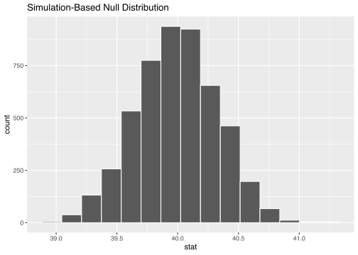
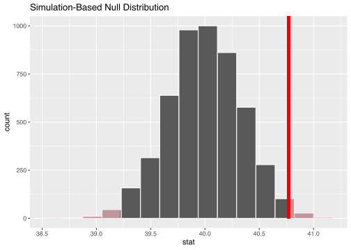
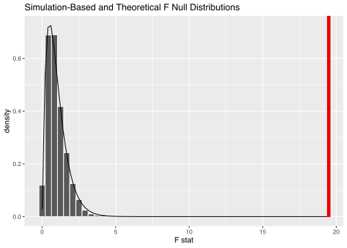

This article only requires the tidymodels package.
Introduction
infer implements an expressive grammar to perform statistical inference that coheres with the tidyverse design framework. Rather than providing methods for specific statistical tests, this package consolidates the principles that are shared among common hypothesis tests into a set of 4 main verbs (functions), supplemented with many utilities to visualize and extract value from their outputs.
Regardless of which hypothesis test we’re using, we’re still asking the same kind of question: is the effect/difference in our observed data real, or due to chance? To answer this question, we start by assuming that the observed data came from some world where “nothing is going on” (i.e. the observed effect was simply due to random chance), and call this assumption our null hypothesis. (In reality, we might not believe in the null hypothesis at all—the null hypothesis is in opposition to the alternate hypothesis, which supposes that the effect present in the observed data is actually due to the fact that “something is going on.”) We then calculate a test statistic from our data that describes the observed effect. We can use this test statistic to calculate a p-value, giving the probability that our observed data could come about if the null hypothesis was true. If this probability is below some pre-defined significance level \(\alpha\), then we can reject our null hypothesis.
If you are new to hypothesis testing, take a look at
The workflow of this package is designed around this idea. Starting out with some dataset,
specify() allows you to specify the variable, or relationship between variables, that you’re interested in.hypothesize() allows you to declare the null hypothesis.generate() allows you to generate data reflecting the null hypothesis.calculate() allows you to calculate a distribution of statistics from the generated data to form the null distribution.
Throughout this vignette, we make use of gss, a dataset supplied by infer containing a sample of 500 observations of 11 variables from the General Social Survey.
library(tidymodels) # Includes the infer package
# load in the dataset
data(gss)
# take a look at its structure
dplyr::glimpse(gss)
#> Observations: 3,000
#> Variables: 11
#> $ year <dbl> 2008, 2006, 1985, 1987, 2006, 1986, 1977, 1998, 2012, 1982, 1…
#> $ age <dbl> 37, 29, 58, 40, 39, 37, 53, 41, 55, 47, 36, 75, 22, 19, 34, 5…
#> $ sex <fct> male, female, male, male, female, male, female, male, male, m…
#> $ college <fct> no degree, no degree, degree, degree, no degree, no degree, n…
#> $ partyid <fct> dem, dem, ind, rep, dem, dem, dem, rep, ind, rep, rep, rep, r…
#> $ hompop <dbl> 4, 3, 3, 5, 5, 5, 4, 1, 5, 4, 5, 2, 3, 2, 5, 2, 5, 7, 1, 3, 4…
#> $ hours <dbl> 50, NA, 60, 84, 40, 50, NA, 60, NA, 40, 20, NA, 40, 40, 20, 5…
#> $ income <ord> $25000 or more, lt $1000, $25000 or more, $25000 or more, $60…
#> $ class <fct> working class, middle class, middle class, middle class, NA, …
#> $ finrela <fct> below average, below average, far above average, far below av…
#> $ weight <dbl> 0.8754895, 0.4297000, 1.5544000, 1.0104000, 0.8593000, 1.0072…
Each row is an individual survey response, containing some basic demographic information on the respondent as well as some additional variables. See ?gss for more information on the variables included and their source. Note that this data (and our examples on it) are for demonstration purposes only, and will not necessarily provide accurate estimates unless weighted properly. For these examples, let’s suppose that this dataset is a representative sample of a population we want to learn about: American adults.
specify(): Specifying Response (and Explanatory) Variables
The specify function can be used to specify which of the variables in the dataset you’re interested in. If you’re only interested in, say, the age of the respondents, you might write:
gss %>%
specify(response = age)
#> Response: age (numeric)
#> # A tibble: 2,988 x 1
#> age
#> <dbl>
#> 1 37
#> 2 29
#> 3 58
#> 4 40
#> 5 39
#> 6 37
#> 7 53
#> 8 41
#> 9 55
#> 10 47
#> # … with 2,978 more rows
On the front-end, the output of specify just looks like it selects off the columns in the dataframe that you’ve specified. Checking the class of this object, though:
gss %>%
specify(response = age) %>%
class()
#> [1] "infer" "tbl_df" "tbl" "data.frame"
We can see that the infer class has been appended on top of the dataframe classes–this new class stores some extra metadata.
If you’re interested in two variables–age and partyid, for example–you can specify their relationship in one of two (equivalent) ways:
# with the named arguments
gss %>%
specify(age ~ partyid)
#> Response: age (numeric)
#> Explanatory: partyid (factor)
#> # A tibble: 2,963 x 2
#> age partyid
#> <dbl> <fct>
#> 1 37 dem
#> 2 29 dem
#> 3 58 ind
#> 4 40 rep
#> 5 39 dem
#> 6 37 dem
#> 7 53 dem
#> 8 41 rep
#> 9 55 ind
#> 10 47 rep
#> # … with 2,953 more rows
# as a formula
gss %>%
specify(response = age, explanatory = partyid)
#> Response: age (numeric)
#> Explanatory: partyid (factor)
#> # A tibble: 2,963 x 2
#> age partyid
#> <dbl> <fct>
#> 1 37 dem
#> 2 29 dem
#> 3 58 ind
#> 4 40 rep
#> 5 39 dem
#> 6 37 dem
#> 7 53 dem
#> 8 41 rep
#> 9 55 ind
#> 10 47 rep
#> # … with 2,953 more rows
If you’re doing inference on one proportion or a difference in proportions, you will need to use the success argument to specify which level of your response variable is a success. For instance, if you’re interested in the proportion of the population with a college degree, you might use the following code:
# specifying for inference on proportions
gss %>%
specify(response = college, success = "degree")
#> Response: college (factor)
#> # A tibble: 2,990 x 1
#> college
#> <fct>
#> 1 no degree
#> 2 no degree
#> 3 degree
#> 4 degree
#> 5 no degree
#> 6 no degree
#> 7 no degree
#> 8 no degree
#> 9 no degree
#> 10 no degree
#> # … with 2,980 more rows
hypothesize(): Declaring the Null Hypothesis
The next step in the infer pipeline is often to declare a null hypothesis using hypothesize(). The first step is to supply one of “independence” or “point” to the null argument. If your null hypothesis assumes independence between two variables, then this is all you need to supply to hypothesize():
gss %>%
specify(college ~ partyid, success = "degree") %>%
hypothesize(null = "independence")
#> Response: college (factor)
#> Explanatory: partyid (factor)
#> Null Hypothesis: independence
#> # A tibble: 2,967 x 2
#> college partyid
#> <fct> <fct>
#> 1 no degree dem
#> 2 no degree dem
#> 3 degree ind
#> 4 degree rep
#> 5 no degree dem
#> 6 no degree dem
#> 7 no degree dem
#> 8 no degree rep
#> 9 no degree ind
#> 10 no degree rep
#> # … with 2,957 more rows
If you’re doing inference on a point estimate, you will also need to provide one of p (the true proportion of successes, between 0 and 1), mu (the true mean), med (the true median), or sigma (the true standard deviation). For instance, if the null hypothesis is that the mean number of hours worked per week in our population is 40, we would write:
gss %>%
specify(response = hours) %>%
hypothesize(null = "point", mu = 40)
#> Response: hours (numeric)
#> Null Hypothesis: point
#> # A tibble: 1,756 x 1
#> hours
#> <dbl>
#> 1 50
#> 2 60
#> 3 84
#> 4 40
#> 5 50
#> 6 60
#> 7 40
#> 8 20
#> 9 40
#> 10 40
#> # … with 1,746 more rows
Again, from the front-end, the dataframe outputted from hypothesize() looks almost exactly the same as it did when it came out of specify(), but infer now “knows” your null hypothesis.
generate(): Generating the Null Distribution
Once we’ve asserted our null hypothesis using hypothesize(), we can construct a null distribution based on this hypothesis. We can do this using one of several methods, supplied in the type argument:
bootstrap: A bootstrap sample will be drawn for each replicate, where a sample of size equal to the input sample size is drawn (with replacement) from the input sample data.
permute: For each replicate, each input value will be randomly reassigned (without replacement) to a new output value in the sample.
simulate: A value will be sampled from a theoretical distribution with parameters specified in hypothesize() for each replicate. (This option is currently only applicable for testing point estimates.)
Continuing on with our example above, about the average number of hours worked a week, we might write:
gss %>%
specify(response = hours) %>%
hypothesize(null = "point", mu = 40) %>%
generate(reps = 5000, type = "bootstrap")
#> Response: hours (numeric)
#> Null Hypothesis: point
#> # A tibble: 8,780,000 x 2
#> # Groups: replicate [5,000]
#> replicate hours
#> <int> <dbl>
#> 1 1 49.2
#> 2 1 39.2
#> 3 1 34.2
#> 4 1 39.2
#> 5 1 39.2
#> 6 1 28.2
#> 7 1 59.2
#> 8 1 59.2
#> 9 1 39.2
#> 10 1 30.2
#> # … with 8,779,990 more rows
In the above example, we take 1000 bootstrap samples to form our null distribution.
To generate a null distribution for the independence of two variables, we could also randomly reshuffle the pairings of explanatory and response variables to break any existing association. For instance, to generate 1000 replicates that can be used to create a null distribution under the assumption that political party affiliation is not affected by age:
gss %>%
specify(partyid ~ age) %>%
hypothesize(null = "independence") %>%
generate(reps = 5000, type = "permute")
#> Response: partyid (factor)
#> Explanatory: age (numeric)
#> Null Hypothesis: independence
#> # A tibble: 14,815,000 x 3
#> # Groups: replicate [5,000]
#> partyid age replicate
#> <fct> <dbl> <int>
#> 1 ind 37 1
#> 2 rep 29 1
#> 3 rep 58 1
#> 4 dem 40 1
#> 5 rep 39 1
#> 6 ind 37 1
#> 7 rep 53 1
#> 8 other 41 1
#> 9 dem 55 1
#> 10 dem 47 1
#> # … with 14,814,990 more rows
calculate(): Calculating Summary Statistics
Depending on whether you’re carrying out computation-based inference or theory-based inference, you will either supply calculate() with the output of generate() or hypothesize, respectively. The function, for one, takes in a stat argument, which is currently one of “mean”, “median”, “sum”, “sd”, “prop”, “count”, “diff in means”, “diff in medians”, “diff in props”, “Chisq”, “F”, “t”, “z”, “slope”, or “correlation”. For example, continuing our example above to calculate the null distribution of mean hours worked per week:
gss %>%
specify(response = hours) %>%
hypothesize(null = "point", mu = 40) %>%
generate(reps = 5000, type = "bootstrap") %>%
calculate(stat = "mean")
#> # A tibble: 5,000 x 2
#> replicate stat
#> <int> <dbl>
#> 1 1 40.3
#> 2 2 39.8
#> 3 3 40.5
#> 4 4 40.2
#> 5 5 40.1
#> 6 6 39.7
#> 7 7 40.3
#> 8 8 40.0
#> 9 9 39.3
#> 10 10 40.2
#> # … with 4,990 more rows
The output of calculate() here shows us the sample statistic (in this case, the mean) for each of our 1000 replicates. If you’re carrying out inference on differences in means, medians, or proportions, or t and z statistics, you will need to supply an order argument, giving the order in which the explanatory variables should be subtracted. For instance, to find the difference in mean age of those that have a college degree and those that don’t, we might write:
gss %>%
specify(age ~ college) %>%
hypothesize(null = "independence") %>%
generate(reps = 5000, type = "permute") %>%
calculate("diff in means", order = c("degree", "no degree"))
#> # A tibble: 5,000 x 2
#> replicate stat
#> <int> <dbl>
#> 1 1 -1.11
#> 2 2 0.790
#> 3 3 -0.847
#> 4 4 0.810
#> 5 5 -0.387
#> 6 6 0.294
#> 7 7 -0.812
#> 8 8 -0.175
#> 9 9 -0.431
#> 10 10 0.962
#> # … with 4,990 more rows
Other Utilities
infer also offers several utilities to extract the meaning out of summary statistics and null distributions—the package provides functions to visualize where a statistic is relative to a distribution (with visualize()), calculate p-values (with get_p_value()), and calculate confidence intervals (with get_confidence_interval()).
To illustrate, we’ll go back to the example of determining whether the mean number of hours worked per week is 40 hours.
# find the point estimate
point_estimate <- gss %>%
specify(response = hours) %>%
calculate(stat = "mean")
#> Warning: Removed 1244 rows containing missing values.
# generate a null distribution
null_dist <- gss %>%
specify(response = hours) %>%
hypothesize(null = "point", mu = 40) %>%
generate(reps = 5000, type = "bootstrap") %>%
calculate(stat = "mean")
#> Warning: Removed 1244 rows containing missing values.
(Notice the warning: Removed 1244 rows containing missing values. This would be worth noting if you were actually carrying out this hypothesis test.)
Our point estimate 40.7722096 seems pretty close to 40, but a little bit different. We might wonder if this difference is just due to random chance, or if the mean number of hours worked per week in the population really isn’t 40.
We could initially just visualize the null distribution.
null_dist %>%
visualize()

Where does our sample’s observed statistic lie on this distribution? We can use the obs_stat argument to specify this.
null_dist %>%
visualize() +
shade_p_value(obs_stat = point_estimate, direction = "two_sided")

Notice that infer has also shaded the regions of the null distribution that are as (or more) extreme than our observed statistic. (Also, note that we now use the + operator to apply the shade_p_value function. This is because visualize outputs a plot object from ggplot2 instead of a data frame, and the + operator is needed to add the p-value layer to the plot object.) The red bar looks like it’s slightly far out on the right tail of the null distribution, so observing a sample mean of 40.7722096 hours would be somewhat unlikely if the mean was actually 40 hours. How unlikely, though?
# get a two-tailed p-value
p_value <- null_dist %>%
get_p_value(obs_stat = point_estimate, direction = "two_sided")
p_value
#> # A tibble: 1 x 1
#> p_value
#> <dbl>
#> 1 0.0216
It looks like the p-value is 0.0216, which is pretty small—if the true mean number of hours worked per week was actually 40, the probability of our sample mean being this far (0.7722096 hours) from 40 would be 0.0216. This may or may not be statistically significantly different, depending on the significance level \(\alpha\) you decided on before you ran this analysis. If you had set \(\alpha = .05\), then this difference would be statistically significant, but if you had set \(\alpha = .01\), then it would not be.
To get a confidence interval around our estimate, we can write:
# start with the null distribution
null_dist %>%
# calculate the confidence interval around the point estimate
get_confidence_interval(point_estimate = point_estimate,
# at the 95% confidence level
level = .95,
# using the standard error
type = "se")
#> # A tibble: 1 x 2
#> lower upper
#> <dbl> <dbl>
#> 1 40.1 41.4
As you can see, 40 hours per week is not contained in this interval, which aligns with our previous conclusion that this finding is significant at the confidence level \(\alpha = .05\).
Theoretical Methods
{infer} also provides functionality to use theoretical methods for "Chisq", "F" and "t" test statistics.
Generally, to find a null distribution using theory-based methods, use the same code that you would use to find the null distribution using randomization-based methods, but skip the generate() step. For example, if we wanted to find a null distribution for the relationship between age (age) and party identification (partyid) using randomization, we could write:
null_f_distn <- gss %>%
specify(age ~ partyid) %>%
hypothesize(null = "independence") %>%
generate(reps = 5000, type = "permute") %>%
calculate(stat = "F")
To find the null distribution using theory-based methods, instead, skip the generate() step entirely:
null_f_distn_theoretical <- gss %>%
specify(age ~ partyid) %>%
hypothesize(null = "independence") %>%
calculate(stat = "F")
We’ll calculate the observed statistic to make use of in the following visualizations—this procedure is the same, regardless of the methods used to find the null distribution.
F_hat <- gss %>%
specify(age ~ partyid) %>%
calculate(stat = "F")
Now, instead of just piping the null distribution into visualize(), as we would do if we wanted to visualize the randomization-based null distribution, we also need to provide method = "theoretical" to visualize().
visualize(null_f_distn_theoretical, method = "theoretical") +
shade_p_value(obs_stat = F_hat, direction = "greater")

To get a sense of how the theory-based and randomization-based null distributions relate, as well, we can pipe the randomization-based null distribution into visualize() and also specify method = "both"
visualize(null_f_distn, method = "both") +
shade_p_value(obs_stat = F_hat, direction = "greater")

That’s it! This vignette covers most all of the key functionality of infer. See help(package = "infer") for a full list of functions and vignettes.